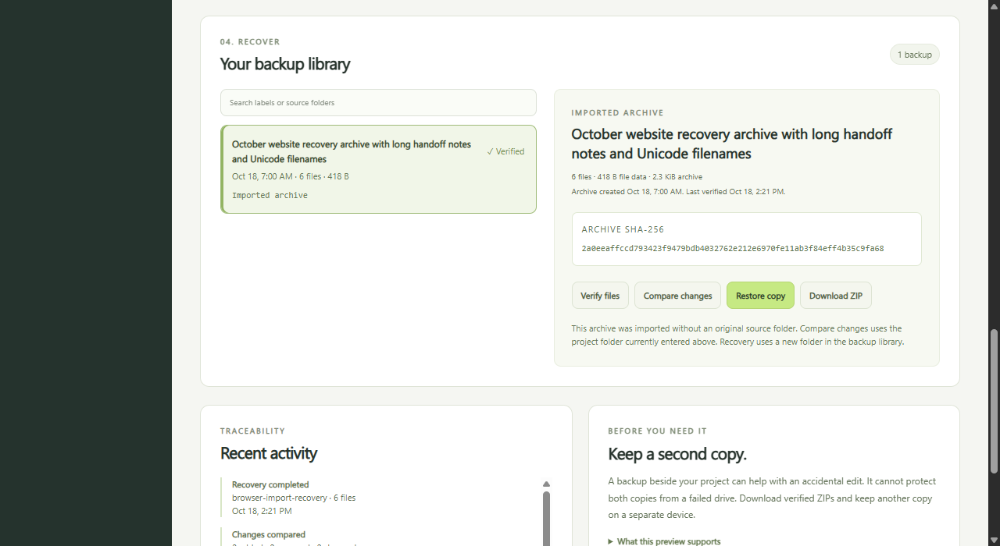
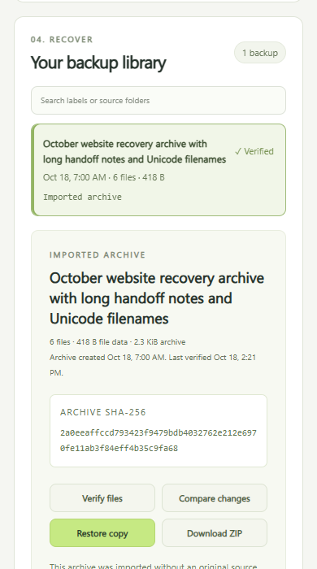

Workbench guide
Recover an existing backup.
Inspect an Archive Desk ZIP, add a verified copy to a fresh library and restore its files into a new folder. You do not need the original library or project folder.

- 01
Check the archive first.
Read its manifest, CRC values and SHA-256 fingerprints. Review the paths and sizes before anything is added to the library.
- 02
Save a verified copy.
Give it a label. The app reopens and checks its own new copy before registering it. Your original ZIP stays as it is, and duplicate archives are refused.
- 03
Use a new folder.
Recover from the imported copy and check every file written. An existing destination folder is refused.

Try it
- Start the app. The overview shows how.
- Under Already have a backup ZIP, choose an Archive Desk ZIP and select Inspect archive.
- Review the files, then select Add verified copy to library.
- Select Restore copy, enter a new folder name and choose Restore and verify. The app shows where the files were saved.

If the old library is unavailable
The app refuses a damaged or unrecognized library instead of quietly replacing it. Keep the old storage folder as it is, restart with a different empty storage folder and import your saved ZIP there.
node server.mjs --workspace "C:/Projects/site" --storage "D:/ProjectBackups/recovery" --port 4330
The workspace and storage must be separate folders. Import and recovery work from the ZIP alone, without knowing where it originally came from.
Which archives work
- Unencrypted Archive Desk backups, such as those from the browser app or the command line.
- Up to 500 files, 20 MiB per file, 50 MiB of file data and a 52 MiB ZIP.
- Not compressed ZIPs from other apps, encrypted .adlock files or ZIP64.
- Paths and bytes are restored. Empty folders, timestamps and permissions are not.